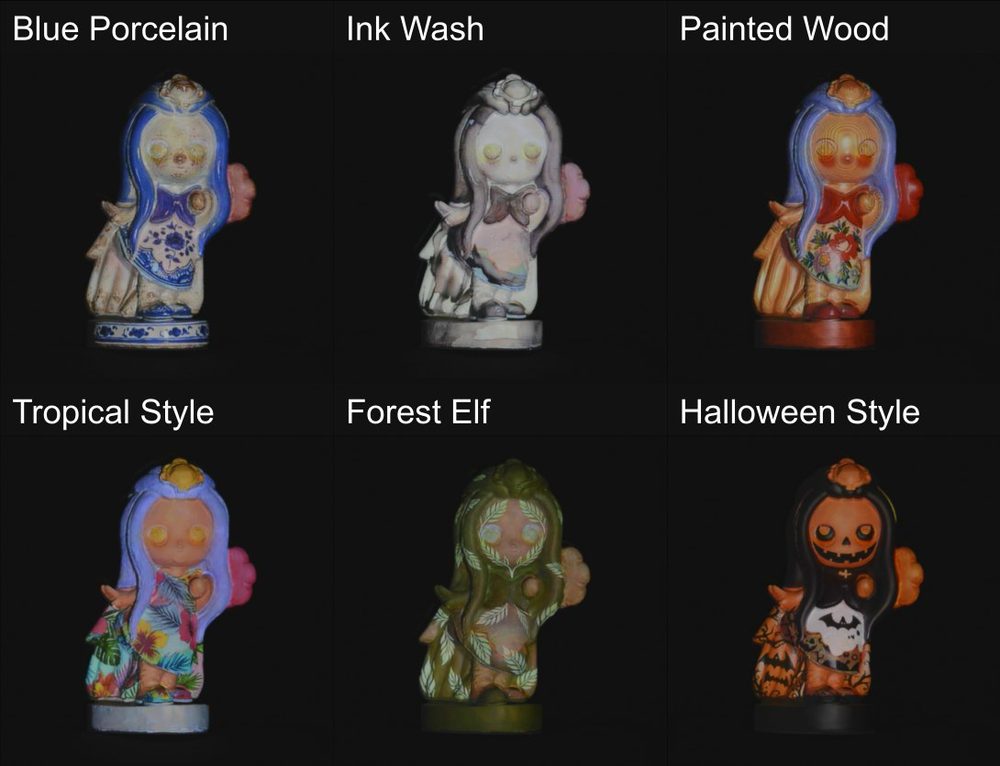
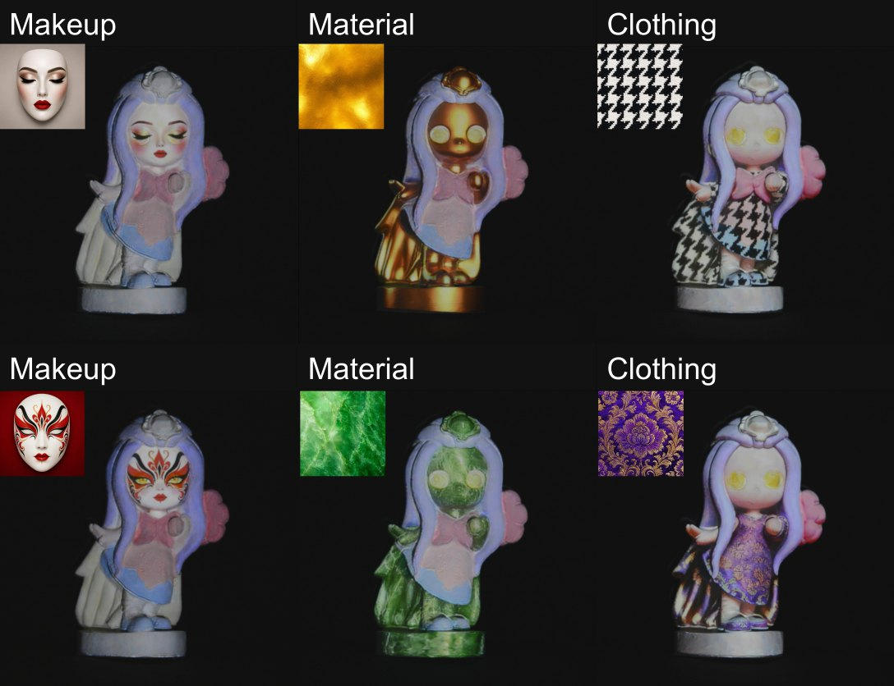

西南大学
Southwest University
计算机科学与技术，本科
Yuqiao Xia
你好，我是夏渝乔，在重庆的西南大学读计算机科学与技术。
我的研究方向是投影映射与投影仪–相机系统（ProCams）。目前主要关注怎样把生成式图像编辑用到真实物体上，让编辑出来的外观能被投影仪如实复现。


图像编辑模型不知道真实表面对投影光的响应，生成的外观常常投不出来。SREdit 从重建的场景中估计一张场景响应图，在采样早期引导冻结的编辑模型，按响应强弱决定各区域能改多少。不需要训练，也不加控制模块，每张图只多花不到一秒。
@article{xia2026sredit,
title = {{SREdit}: Scene Response Guided Appearance Editing
for Projection Mapping},
author = {Xia, Yuqiao and Deng, Yuchen and Chang, Ziheng and Huang, Bingyao},
journal = {arXiv preprint arXiv:2610.32792},
year = {2026}
}
Southwest University
计算机科学与技术，本科